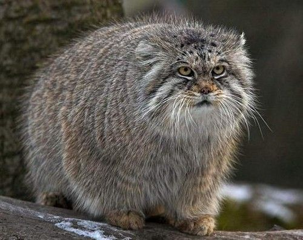

Manule
Der Manul (Otocolobus manul, Syn.: Felis manul), auch Pallaskatze (nach Peter Simon Pallas) genannt, ist eine kleine Katzenart aus Zentralasien.
Der Manul (Otocolobus manul, Syn.: Felis manul), auch Pallaskatze (nach Peter Simon Pallas) genannt, ist eine kleine Katzenart aus Zentralasien.
Ein Manul ist etwa so groß wie eine Hauskatze, die Kopfrumpflänge beträgt 60 Zentimeter, hinzu kommt der 25 bis 31 Zentimeter lange Schwanz. Durch die stämmige Gestalt, die relativ kurzen Beine und das dichte, langhaarige Fell wirkt der Manul allerdings viel größer als eine Hauskatze. Die abgerundeten Ohren setzen recht tief am Kopf an und stellen vermutlich eine Anpassung an den für Beutegreifer deckungsarmen Lebensraum dar.[1] Im Gegensatz zu den meisten anderen Kleinkatzen sind beim Manul die Pupillen rund. Das Fell ist ockergelb und trägt einige schwarze Querstreifen, die aber im dichten Haar nicht immer leicht zu sehen sind. Zwischen den drei Unterarten gibt es kleine Unterschiede in der Färbung. Im Vergleich zu anderen Wildkatzen ist das Fell länger, am Bauch sogar doppelt so lang wie auf dem Rücken oder an den Seiten. Die Spitzen der einzelnen Haare sind weiß.[2] Wie auch beim Schneeleoparden schützt der dichte Pelz das Tier vor dem in seinem Lebensraum typischen kalten und schneereichen Winter. Die Kombination von gedrungener Gestalt und dichtem, flaumigem Fell lassen den Manul zudem größer wirken als er tatsächlich ist. Das Gewicht schwankt zwischen 2,0 und 4,5 Kilogramm.